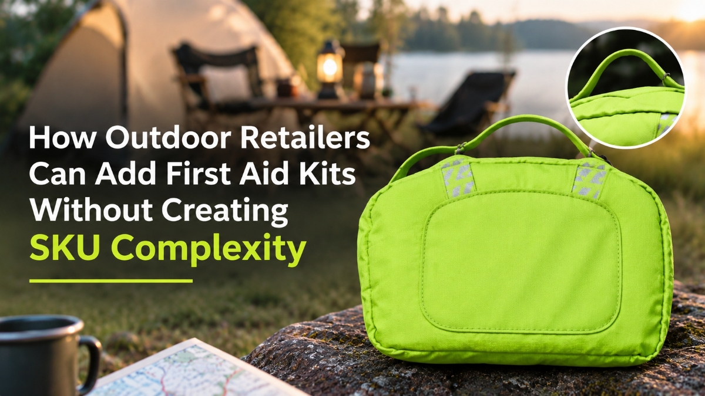

How Outdoor Retailers Can Add First Aid Kits Without Creating SKU Complexity
SEP 01, 2026

Adding a new product category is not always easy for outdoor retailers.
The challenge is usually not finding a supplier.
The bigger questions are:
- How many products should we introduce?
- Which products fit our customers?
- How can we avoid creating unnecessary inventory complexity?
For functional categories like outdoor first aid kits, a simple and structured approach is often more effective.
Start With Customer Scenarios, Not Product Numbers
One common mistake when adding a new category is focusing on the number of products.
More SKUs do not always mean better selection.
For outdoor first aid, customers usually think about situations:
- Where am I going?
- How remote is the environment?
- What kind of risks may I face?
Therefore, the product structure should follow usage scenarios.
A Simple Three-Level Structure for Outdoor First Aid
A practical outdoor first aid range can often be organized into three main levels.
1. MINI — Everyday Outdoor Activities
Designed for:
- day hikes;
- casual outdoor activities;
- short trips.
The focus is:
- lightweight carry;
- essential wound treatment;
- easy storage.
For many customers, this is the first step into outdoor preparedness.
2. STANDARD — Camping and Family Adventures
Designed for:
- camping;
- weekend adventures;
- family outdoor activities.
Compared with a compact kit, this level provides broader coverage for situations where multiple people may need assistance.
It fits customers who are not in extreme environments but still want to be prepared.
3. PLUS — Remote Travel and Extended Adventures
Designed for:
- overlanding;
- remote travel;
- extended outdoor trips.
The focus shifts from convenience to capability.
When travel takes place far from immediate medical support, having more complete emergency supplies becomes more important.
Why Simple Product Structures Help Retailers
For retailers, a clear range creates several benefits.
Easier Product Selection
Sales teams can recommend products based on customer activities instead of explaining dozens of similar options.
Easier Website Navigation
Customers can quickly understand which product matches their planned adventure.
Better Inventory Management
A focused range reduces unnecessary SKU complexity while still covering different customer needs.
First Aid as a Natural Companion Product
Outdoor customers rarely purchase equipment in isolation.
Someone buying:
- a backpack;
- a flashlight;
- camping equipment;
- survival tools;
is often preparing for time outside their normal environment.
First aid naturally fits into this preparation process.
It is not a replacement for existing outdoor categories.
It is a complementary product that strengthens the overall outdoor equipment offering.
The Goal Is Not to Add More Products
The goal of category expansion should not be:
“Add another item to the website.”
A stronger approach is:
“Help customers complete their preparation with products that naturally belong together.”
For outdoor retailers, the right first aid category does not need to be complicated.
A simple structure, clear positioning, and scenario-based selection can make the category easier for both retailers and customers.
Final Thought
The best product additions are not always the largest categories.
Sometimes, a small but highly relevant functional product can create meaningful value.
For outdoor retailers, first aid represents one of those opportunities:
A practical category.
A natural companion product.
And a solution that supports customers before, during, and after their adventures.